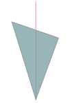

Medians of a Triangle
A median of a
triangle is a
line segment
joining a
vertex
to the midpoint of the opposite side.
A triangle therefore has three medians.
Try this Drag the orange dots on each
vertex
to reshape the triangle. Notice the three medians all meet at one point.
A median of a triangle is a
line segment
from a vertex of the triangle to the
midpoint of the side opposite that vertex. Because there are three vertices, there are of course three possible medians. One of the fascinating
things about them is that no matter what shape the triangle, all three always intersect at
a single point. This point is called the centroid of the triangle.
Properties
There are some fascinating properties of the medians of a triangle:
- The fact that the three medians always meet at a single point is interesting in its own right
- Each median divides the triangle into two smaller triangles which have the same area
- The centroid
(point where they meet) is the center of gravity of the triangle
- The three medians divide the triangle into 6 smaller triangles that all have the same area,
even though they may have different shapes.
Adjust the triangle above by dragging any vertex. Convince yourself that the three medians (gray lines) always intersect at a single point.
You can also visually estimate that the area facts given above are true.
Try this
- Make any triangle about 12 - 24" wide from cardboard. Make it as lop-sided and irregular as you can.
- Draw a median
on the cardboard triangle. Any one will do.
- At the point where the median meets the side of the triangle make a small hole near the edge. Tie a string through it.
- When you hold up the triangle by the string, the median line should be vertical - exactly in line with the string.(see figure below)
- Why?

Other triangle topics
General
Perimeter / Area
Triangle types
Triangle centers
Congruence and Similarity
Solving triangles
Triangle quizzes and exercises
(C) 2011 Copyright Math Open Reference.
All rights reserved